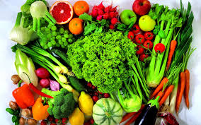
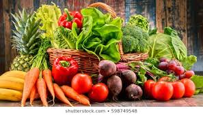

we strive to grow and sell life rejuvenating certified organic fruits,vegetables for you and your family.We deliver at your door step

Mama Mboga-(Variety with Great savings too!) The items are all in season and substitutions will not apply